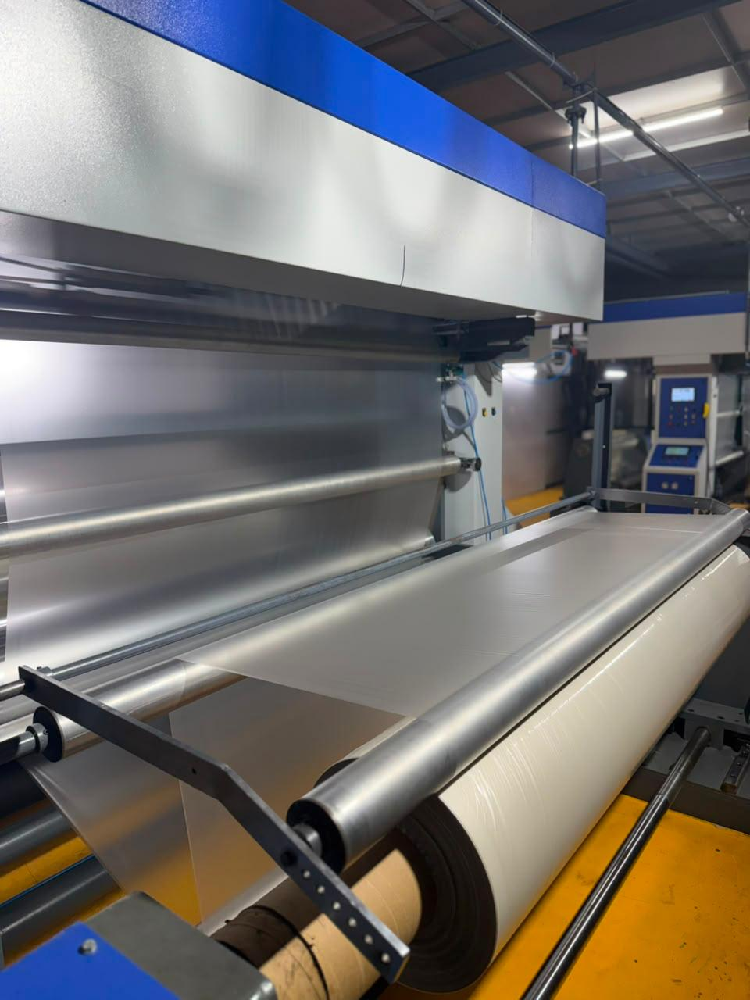
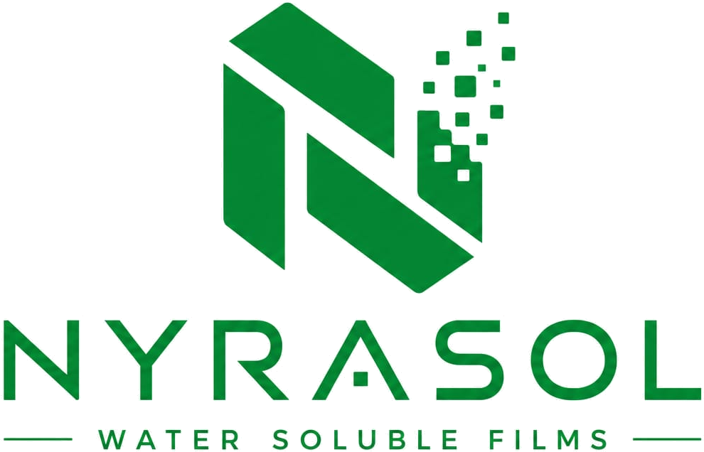
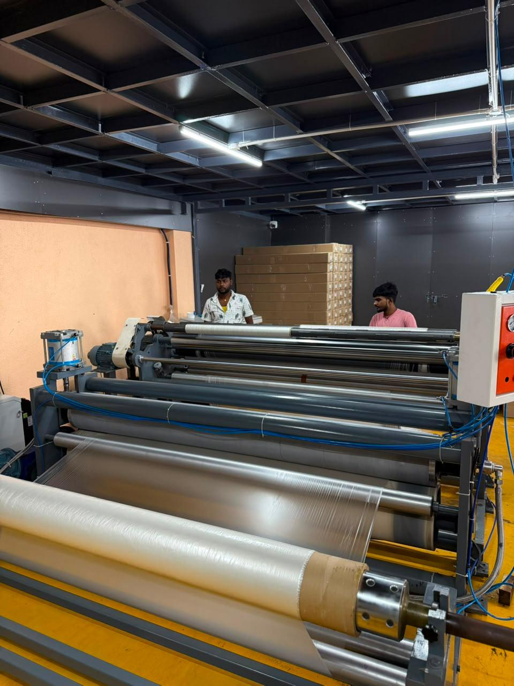
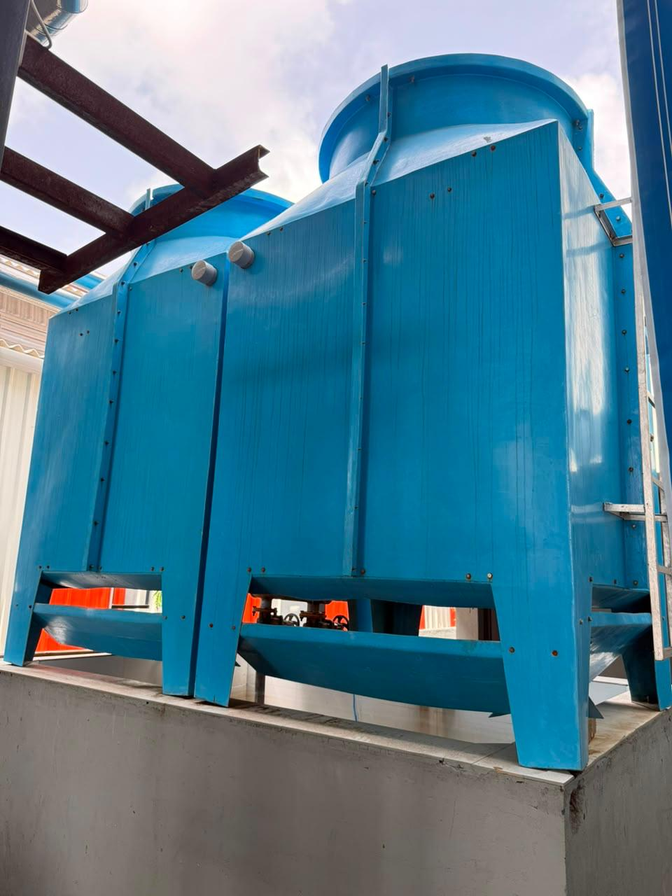
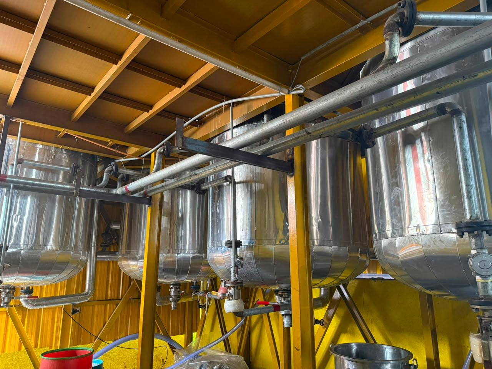

Build sustainable packaging that works reliably in everyday industrial conditions.
We focus on innovative, high-quality products that support environmental responsibility while remaining practical for real customer use.
Polysky Greentech Private Limited manufactures premium water soluble films in Gujarat, India, with Nyrasol positioned as the flagship product line for safer, cleaner, and more sustainable packaging applications.



Based on your presentation, Nyrasol is the clearest expression of the company's go-forward product story. It is positioned as a safe, precise, and environmentally responsible water soluble film solution for everyday industrial packaging needs.
Headquartered in Bilimora, Gujarat, Polysky Greentech Private Limited manufactures premium water soluble films for customers looking for eco-conscious packaging, reliable service, and a practical path away from plastic residue.
We focus on innovative, high-quality products that support environmental responsibility while remaining practical for real customer use.
Our long-term approach combines responsible growth, customer trust, and a clear commitment to sustainable manufacturing.
The product is positioned as fully water soluble, helping reduce packaging residue in the end-use workflow.
Especially for agrochemical use, the brand story emphasizes safer, more controlled interaction with packaged materials.
Nyrasol is framed for daily packaging applications across multiple industries, not just as a laboratory concept.
The presentation highlights a modern manufacturing setup designed for high-quality output, operational efficiency, strict safety protocols, and scalable production. This section now reflects that story without drifting into technical spec-sheet language.



Nyrasol is specially positioned for agrochemical packaging with a safer, precise, and more environmentally responsible product story.
Suitable for textile embroidery-related workflows where dissolvable film use supports cleaner process handling.
The presentation positions the product line for ceramic coating support where controlled dissolvable film use is valuable.
Consumer and institutional use cases include detergent pod formats and laundry bag applications tied to convenience and cleanliness.
Open the brochure for a more detailed look at our company profile, core material offering, and application areas.
Polysky Greentech Private Limited
Plot No. 10-21 & 30-42/25,
GIDC, Antalia,
Bilimora, Navsari - 396325,
Gujarat, India.